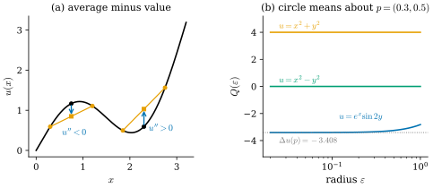
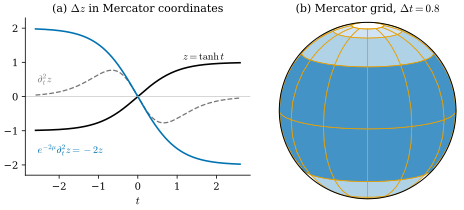

42.1 Many Definitions of the Laplacian
Goals
- \(\R^n\)에서 Laplacian의 네 가지 표현(second partial derivative의 합, Hessian의 trace, \(\divg\grad\), \(\star d\star d\))이 같음을 말하고, “평균과의 차이” 표현을 Taylor 전개로 증명할 수 있다.
- graph Laplacian을 정의하고, 그것이 Laplacian의 discrete 판이 되는 경우와 되지 않는 경우를 구별할 수 있다.
- 곡면 위의 Laplace–Beltrami operator를 \(\star d\star d\)로 쓰고, conformal coordinates에서 \(\Delta = e^{-2\mu}(\partial_u^2 + \partial_v^2)\)를 유도하며 unit sphere의 \(\Delta z = -2z\)를 계산할 수 있다.
- Green's first identity를 Stokes's theorem으로 증명하고, 닫힌 곡면에서 \(\Delta\)가 self-adjoint이고 negative semidefinite이며 kernel이 상수임을 보일 수 있다. Hodge Laplacian과의 부호 관계를 말할 수 있다.
Prerequisites
- Proposition 35.2.12: \(\R^n\)에서 \(\divg X = \star d\star X^\flat\), \(\Delta f = \star d\star df\)
- Theorem 35.4.5: Stokes's theorem, Proposition 35.5.1: \(\alpha\wedge\star\beta = \inner{\alpha}{\beta}\,dV\)
- Definition 35.5.6, Theorem 35.5.8: codifferential \(d^*\)와 \(d^*df = -\Delta f\)
- Definition 38.2.7: conformal coordinates \(g = e^{2\mu}(du^2 + dv^2)\), Proposition 38.3.6: 곡면 위의 Hodge star
- Definition 36.6.6: cotan Laplacian \(L\), Definition 38.6.2: discrete Laplace–Beltrami operator \(\star_0^{-1}L\)
Motivation
Chapter 41은 mesh의 넓이를 vertex 위치로 미분해 \(-L\mathbf{x}\)를 얻었고, mean curvature flow를 \(\partial_t\mathbf{x} = \Delta\mathbf{x}\)로 썼다(Theorem 41.2.7, Definition 41.5.3). 그 앞에서도 같은 행렬이 여러 번 나왔다. Chapter 36은 \(L = -d_0^{\mathsf T}\star_1d_0\)를 \(d\)와 \(\star\)의 합성으로 정의했고(Definition 36.6.6), Chapter 38은 \(\star_0^{-1}L\)을 곡면 위의 Laplace–Beltrami operator의 discrete 판이라 불렀다(Definition 38.6.2). 남은 질문은 이것이다. smooth \(\Delta\)는 그 자체로 무엇이고, mesh 위의 cotan matrix가 왜 “올바른” 이산화인가?
이 장은 이 질문에 답한다. 이 절은 smooth 쪽을 정리한다. Laplacian에는 겉보기에 전혀 다른 정의가 여럿 있다. 미분의 합, 평균과의 차이, gradient의 divergence, Dirichlet energy의 gradient 등이다. 이것들이 같은 operator라는 것을 보이고, 각 정의가 어떤 discrete 판으로 이어지는지 표시해 둔다. Section 42.3과 Section 42.4는 그중 둘(Dirichlet energy와 \(\star d\star d\))에서 출발해 같은 \(L\)을 얻는다.
Laplacian은 물리와 기하의 기본 방정식에 계속 나온다. heat equation(열 방정식) \(\partial_tu = \Delta u\)는 열의 확산을, wave equation \(\partial_t^2u = \Delta u\)는 진동을, Laplace equation \(\Delta u = 0\)은 평형 상태를 나타낸다. geometry processing에서도 smoothing(Section 42.6), parametrization(Chapter 43), 거리 계산(Chapter 44), vector field 분해(Chapter 45)가 모두 Laplacian으로 만든 linear system을 푼다 [CMU-DDG L18] slides 3–5.
The Laplacian in \(\R^n\)
\(\R^n\)에서 출발한다. 이 study set의 규약(Notation and Conventions)에 따라 \(\Delta u := \divg(\grad u)\)이고, 이것이 Laplacian(라플라시안)이다. Riemannian manifold 위의 일반적인 정의는 Track 3의 Section 21.6이 맡는다. 먼저 이미 아는 표현들을 한자리에 모으자.
Proposition 42.1.1 (four formulas in Euclidean space). \(U \subseteq \R^n\)이 open set이고 \(u \in C^\infty(U)\)이면, 표준 좌표 \((x^1, \dots, x^n)\)에서
이다. 여기서 \(\Hess u\)는 second partial derivative의 행렬 \(\big(\partial_i\partial_ju\big)_{ij}\)이다.
Proof. 표준 좌표에서 \(\grad u = (\partial_1u, \dots, \partial_nu)\)이고 \(\divg X = \sum_i\partial_iX^i\)이므로 첫 등호와 둘째 등호가 나온다. 셋째는 trace가 대각 성분의 합이라는 것이다. 넷째는 Proposition 35.2.12(b)다.
네 식은 같은 operator지만 하는 일이 다르게 보인다. \(\sum\partial_i^2\)는 축마다 휘는 정도를 더한 것이고, \(\tr\Hess u\)는 best quadratic approximation \(u(p) + \inner{\grad u}{v} + \tfrac12v^{\mathsf T}(\Hess u)v\)의 이차 부분이 모든 방향에서 휘는 정도, 곧 second directional derivative \(\omega^{\mathsf T}(\Hess u)\omega\)(\(\abs{\omega} = 1\))를 평균한 것의 \(n\)배다(아래 증명의 계산). \(\divg\grad\)는 gradient field가 얼마나 퍼져 나가는지를 재고, \(\star d\star d\)는 같은 것을 \(d\)와 \(\star\)로 나눈 것이다. 다음 명제의 다섯째 표현은 미분을 전혀 쓰지 않는다.
Proposition 42.1.2 (the Laplacian as deviation from the average). \(U \subseteq \R^n\)이 open set, \(u \in C^\infty(U)\), \(p \in U\)이고, \(\varepsilon \gt 0\)이 \(\overline{B_\varepsilon(p)} \subseteq U\)를 만족한다고 하자. \(\bar u_\varepsilon(p)\)를 sphere \(\partial B_\varepsilon(p)\) 위에서 \(u\)의 평균(\(n = 1\)이면 두 점 \(p \pm \varepsilon\)의 평균)이라 하면
이다.
Proof idea: Taylor 전개를 sphere 위에서 평균하면 1차 항은 대칭 때문에 사라지고, 2차 항에서는 Hessian의 대각 성분만 같은 무게 \(1/n\)으로 남는다.
Proof. 단위 vector \(\omega\)에 대해 Taylor's theorem으로
\[ \begin{aligned} u(p + \varepsilon\omega) &= u(p) + \varepsilon\sum_i\partial_iu(p)\,\omega^i \\ &\quad + \frac{\varepsilon^2}{2}\sum_{i,j}\partial_i\partial_ju(p)\,\omega^i\omega^j + R(\varepsilon, \omega), \end{aligned} \]
이고 \(\abs{R} \le C\varepsilon^3\)이다. 여기서 \(C\)는 \(\overline{B_\varepsilon(p)}\) 위의 third partial derivative의 최댓값으로 정해지는 상수로 \(\omega\)에 무관하다. 양변을 unit sphere 위에서 평균하자(넓이 측도는 orthogonal transformation에 대해 불변이다). \(\omega \mapsto -\omega\)에 대한 대칭으로 \(\overline{\omega^i} = 0\)이다. \(i \ne j\)이면 \(\omega^i\)의 부호만 바꾸는 reflection으로 \(\overline{\omega^i\omega^j} = 0\)이다. 좌표를 바꾸는 permutation으로 \(\overline{(\omega^1)^2} = \cdots = \overline{(\omega^n)^2}\)이고 합이 \(\overline{\abs{\omega}^2} = 1\)이므로 각각 \(1/n\)이다. 따라서 \(\bar u_\varepsilon(p) = u(p) + \tfrac{\varepsilon^2}{2n}\sum_i\partial_i^2u(p) + O(\varepsilon^3)\)이고, (42.1.1)로 \(\sum_i\partial_i^2u = \Delta u\)이다. \(n = 1\)에서 “unit sphere”는 두 점 \(\pm1\)이고 같은 계산이 그대로 성립한다.
이 명제가 말하는 것은 간단하다. \(\Delta u(p) \gt 0\)이면 \(u(p)\)는 둘레의 평균보다 작고, \(\Delta u(p) \lt 0\)이면 크다. Laplacian은 “이웃과 얼마나 다른가”를 잰다 [CMU-DDG L18] slide 14. heat equation \(\partial_tu = \Delta u\)는 이 해석에서 “값이 이웃의 평균 쪽으로 움직인다”는 뜻이 되고, Laplace equation \(\Delta u = 0\)은 “모든 점의 값이 이웃의 평균과 같다”는 뜻이 된다(Section 42.2의 mean value property).

0이라 적혀 있다. (b) 가로축 반지름 ε(0.02에서 1, log 눈금), 세로축 Q(ε). 주황 수평선은 4에서 u = x^2 + y^2, 초록 수평선은 0에서 u = x^2 - y^2이다. 파란 곡선 u = e^x sin 2y는 작은 ε에서 회색 점선 Δu(p) = -3.408에 붙어 있다가 ε = 1에서 -2.82까지 올라간다.">Figure 42.1.1의 (a)부터 보자. 봉우리 근처의 검은 점은 양옆 두 점보다 높아서, 두 점의 평균(주황 사각형)이 그 아래에 있다. 골짜기에서는 반대다. 화살표의 방향이 곧 \(u''\)의 부호다. (b)는 같은 생각을 평면에서 정량적으로 확인한다. 세로축의 양 \(Q(\varepsilon)\)은 (42.1.2)의 극한 앞의 식이고, \(\varepsilon \to 0\)인 왼쪽 끝에서 세 곡선이 모두 각자의 \(\Delta u(p)\)에 닿는다. 두 다항식은 처음부터 정확히 그 값이라는 점이 눈에 띈다. 이것을 다음 예에서 계산한다.
Example 42.1.3 (three functions in the plane). \(n = 2\)이고 원의 점을 \(p + \varepsilon(\cos t, \sin t)\)로 쓰자. 평균은 \(\tfrac{1}{2\pi}\int_0^{2\pi}\cdots\,dt\)이고 \(\overline{\cos t} = \overline{\sin t} = \overline{\cos t\sin t} = 0\), \(\overline{\cos^2t} = \overline{\sin^2t} = \tfrac12\)이다. (a) \(u = x^2 + y^2\)이면 \(u(p + \varepsilon(\cos t, \sin t))\) \(= \abs{p}^2 + 2\varepsilon\inner{p}{(\cos t, \sin t)} + \varepsilon^2\)이므로 \(\bar u_\varepsilon(p) - u(p) = \varepsilon^2\)이고 \(Q(\varepsilon) = 4 = \Delta u\)가 모든 \(\varepsilon\)에서 정확하다. (b) \(u = x^2 - y^2\)이면 \(\varepsilon^2(\overline{\cos^2t} - \overline{\sin^2t}) = 0\)이므로 \(\bar u_\varepsilon = u(p)\)이고 \(Q = 0 = \Delta u\)이다. (c) \(u = e^x\sin 2y\)는 \(\Delta u = e^x\sin 2y - 4e^x\sin 2y = -3u\)이므로 \(p = (0.3, 0.5)\)에서 \(\Delta u(p) = -3e^{0.3}\sin 1 = -3.4076\)이다. 3차 이상의 항이 있으므로 \(Q(\varepsilon)\)은 극한에서만 이 값이 된다(Figure 42.1.1(b)).
Verification: verify/v-42-1-laplacian-definitions.py
Non-example 42.1.4 (second derivatives in other coordinates). (42.1.1)의 \(\sum_i\partial_i^2\)는 표준 좌표(orthonormal coordinates)에서만 Laplacian이다. polar coordinates \((r, \theta)\)에서 \(\partial_r^2 + \partial_\theta^2\)를 계산하면 \(u = r^2 = x^2 + y^2\)에 \(2\)를 주지만 \(\Delta u = 4\)이고, \(u = r\cos\theta = x\)에 \(-r\cos\theta\)를 주지만 \(\Delta x = 0\)이다. “축마다의 second derivative를 더한다”는 정의는 좌표를 바꾸면 깨진다. 반면 \(\divg\grad\), \(\star d\star d\), 평균과의 차이는 좌표 없이 정의되므로 곡면으로 옮길 수 있다. 좌표가 conformal이면 고쳐 쓴 공식이 간단하다(Proposition 42.1.10, Exercise 42.1.1).
Remark 42.1.5 (one dimension: convexity and curvature). \(n = 1\)에서 (42.1.2)는 \[ u''(x) = \lim_{\varepsilon\to0}\big(u(x + \varepsilon) - 2u(x) + u(x - \varepsilon)\big)/\varepsilon^2, \] 곧 second difference다. \(u'' \gt 0\)은 국소적으로 convex(chord가 graph 위에 있다)라는 뜻이다. 또 graph \((x, u(x))\)의 signed curvature(Definition 4.4.2)는 \(u''/(1 + u'^2)^{3/2}\)이므로, \(u' = 0\)인 점에서 \(u''\)는 graph의 curvature 그 자체다 [CMU-DDG L18] slides 8–9. Laplacian은 “함수의 graph가 얼마나 휘었는가”를 기울기가 작을 때 1차까지 잰 양이다.
Graph Laplacians
평균과의 차이라는 해석은 미분이 없는 곳에서도 쓸 수 있다. 점들이 edge로 이어져 있기만 하면 된다.
Definition 42.1.6 (graph Laplacian). finite graph \(G\)(vertex \(1, \dots, n\))의 각 edge \(\{i, j\}\)에 weight \(w_{ij} = w_{ji} \in \R\)가 주어졌다고 하자. \(u \in \R^n\)에 대하여
로 정한 \(n \times n\) 행렬 \(L_G\)를 \(G\)의 graph Laplacian(그래프 라플라시안)이라 한다. 성분으로는 \((L_G)_{ij} = w_{ij}\)(\(i \sim j\)), \((L_G)_{ii} = -\sum_{j\sim i}w_{ij}\), 나머지는 \(0\)이다.
정의에서 바로 \(L_G\)는 symmetric이고 행의 합이 \(0\)이다. 모든 \(w_{ij} \gt 0\)이면 \(-u^{\mathsf T}L_Gu = \sum_{\{i,j\}}w_{ij}(u_j - u_i)^2 \ge 0\)이므로 \(-L_G\)는 positive semidefinite다(Proposition 36.6.9와 같은 계산). \(w = 1\)일 때 \(-L_G = D - A\)(degree matrix − adjacency matrix)이고, 이것이 흔히 쓰는 부호다(위의 Conventions 상자). \(L_G\)의 \(i\)번째 행을 weight의 합으로 나누면 “이웃의 가중 평균 − 자기 값”이 되어 Proposition 42.1.2의 \(\bar u_\varepsilon - u\)의 discrete 판이다. \(w = 1\)로 그렇게 나눈 것이 Section 31.3의 uniform Laplacian이다.
Example 42.1.7 (graph Laplacians that are Laplacians). (a) 간격 \(h\)인 1차원 grid(path graph)에 \(w = 1/h^2\)를 주면 \((L_Gu)_i = (u_{i+1} - 2u_i + u_{i-1})/h^2\)이고, \(u_i = u(ih)\)이면 Remark 42.1.5에 의해 \(u''(ih)\)로 수렴한다. 같은 grid를 원으로 닫으면(cycle graph) \(-L_G\)의 eigenvalue가 원의 \(-d^2/d\vartheta^2\)의 eigenvalue \(k^2\)에 가까워진다(Exercise 42.1.3). (b) triangle mesh의 vertex와 edge로 된 graph에 cotan weight \(w_{ij} = \tfrac12(\cot\alpha_{ij} + \cot\beta_{ij})\)를 주면 \(L_G\)가 바로 cotan Laplacian \(L\)이다(Proposition 36.6.7). 이 weight는 음수일 수도 있다. 그래서 Definition은 weight의 부호를 제한하지 않았다.
Non-example 42.1.8 (weights that ignore the metric). 같은 mesh의 graph에 \(w = 1\)을 주면 기하를 전혀 보지 않는 operator가 된다. 정삼각형 grid에서 \(d_0^{\mathsf T}d_0 = -L_G\)를 \(x^2\)에 쓰면 가운데 vertex에서 \(-3\ell^2\)이고, mesh를 세분하면 \(0\)으로 간다(Non-example 36.6.5). 넓이로 나누어 크기를 맞추어도 일반 mesh에서는 vertex를 surface를 따라 미끄러뜨린다(Figure 31.3.4). graph Laplacian이 Laplacian의 이산화가 되려면 weight가 metric을 담아야 한다. 그것을 정하는 두 방법이 Section 42.3(FEM)과 Section 42.4(DEC)다.
Remark 42.1.9 (random walks). 간격 \(h\)인 grid \(h\Z^n\) 위에서 한 걸음마다 \(2n\)개의 이웃 \(x \pm he_i\) 가운데 하나로 같은 확률로 옮겨 가는 random walk \(X_k\)를 생각하자. 한 걸음 뒤 \(u\)의 기댓값의 변화는 \(\mathbb{E}[u(X_1)] - u(x)\) \(= \tfrac{1}{2n}\sum_{i,\pm}\big(u(x \pm he_i) - u(x)\big)\)이고, 이것은 \(w = 1/(2n)\)인 graph Laplacian이다. Proposition 42.1.2의 증명에서 unit sphere 대신 \(2n\)개의 점 \(\pm e_i\)를 써도 \(\overline{\omega^i\omega^j} = \delta_{ij}/n\)이 그대로이므로 이 값은 \(\tfrac{h^2}{2n}\Delta u(x) + O(h^3)\)이다. 걸음 수와 \(h\)를 함께 극한으로 보내면 Brownian motion이 되고, Laplacian은 그 평균값이 시간에 따라 변하는 속도를 정한다(진술만 한다. 정확한 극한과 상수는 확률론의 주제다) [CMU-DDG L18] slide 26.
The Laplace–Beltrami Operator
이제 휘어진 곡면으로 간다. 곡면 \(S\)를 매개화 \(\mathbf{x}\colon U \to \R^3\)으로 보면 parameter 평면에는 induced metric \(g\)가 있고(Definition 38.2.1), 그 \(g\)로 정한 Hodge star \(\star\)가 있다(Proposition 38.3.6: 1-form에서 \((\star\alpha)(X) = -\alpha(X')\), \(X'\)은 \(g\)에 대한 \(+90^\circ\) 회전, 2-form에서 \(\star(f\,dA) = f\)). (42.1.1)의 마지막 표현은 \(d\)와 \(\star\)만 쓰므로 그대로 옮길 수 있다. 곡면 위에서
를 \(u\)의 Laplace–Beltrami operator(라플라스-벨트라미 연산자)라 부른다. 평면(\(g = du^2 + dv^2\))에서는 (42.1.1)과 같다. \(\star\)가 좌표 없이 정의된 연산(Definition 34.2.5)이고 \(d\)도 좌표와 무관하므로, \(\Delta u\)는 매개화의 선택에 의존하지 않는다. 또 \(g\)만 쓰고 \(\mathbf{x}\)의 나머지 정보는 쓰지 않으므로 isometry로 보존된다. discrete 쪽에서 이에 대응하는 것이 “edge length가 같으면 \(L\)이 같다”(Corollary 38.6.3)였다. gradient와 divergence도 곡면 위에서 \(\grad u = (du)^\sharp\)(\(g\)에 대한 sharp, Section 34.3), \(\divg X = \star d\star X^\flat\)로 정하면 \(\Delta = \divg\grad\)가 그대로 성립한다. 엄밀한 일반론은 Section 21.6에 있다.
Proposition 42.1.10 (the Laplace–Beltrami operator in coordinates). immersion \(\mathbf{x}\colon U \to \R^3\)의 induced metric 행렬을 \(\mathsf{g} = (g_{ab})\), 역행렬을 \((g^{ab})\)라 하자. (a) 일반 좌표에서
이다. (b) 특히 \((u, v)\)가 conformal coordinates, 곧 \(g = e^{2\mu}(du^2 + dv^2)\)이면(Definition 38.2.7)
이다(함수를 \(f\)로 썼다. \(u\)는 좌표다).
Proof. (a)는 진술만 한다. 같은 계산을 일반 Riemannian manifold에서 하는 것이 Section 21.6이고, Chapter 38은 이 식으로 sphere의 \(\Delta z\)를 계산했다(Exercise 38.6.2).
(b)를 (42.1.4)에서 직접 유도하자. 점마다 \(\mathsf{g} = e^{2\mu}I_2\)이므로 \(g\)에 대한 \(+90^\circ\) 회전은 보통의 회전 \(J\)와 같다. \(JX\)는 \(X\)와 \(g\)-길이가 같고 \(g\)-orthogonal이며 \((X, JX)\)가 positively oriented이기 때문이다. 따라서 Proposition 38.3.6(b)에서 1-form의 \(\star\)는 평면의 것과 같다: \(\star du = dv\), \(\star dv = -du\)(\(\star du(X) = -du(JX) = X^2 = dv(X)\)이고 \(\star dv\)도 같은 계산이다). 넓이 형식은 \(dA = \sqrt{\det\mathsf{g}}\,du\wedge dv = e^{2\mu}\,du\wedge dv\)이므로 2-form에서는 \(\star(h\,du\wedge dv) = \star(he^{-2\mu}\,dA) = e^{-2\mu}h\)다. 이제 \(df = f_u\,du + f_v\,dv\)이므로
\[ \begin{aligned} \star df &= f_u\,dv - f_v\,du, \\ d\star df &= (f_{uu} + f_{vv})\,du\wedge dv, \\ \star d\star df &= e^{-2\mu}(f_{uu} + f_{vv}) \end{aligned} \]
이다.
(b)의 증명에서 두 가지를 읽을 수 있다. 첫째, 2차원에서 1-form의 \(\star\)는 metric의 conformal 배율 \(e^{2\mu}\)에 의존하지 않는다. 각만 보기 때문이다. 둘째, metric의 배율은 마지막 \(\star\)(넓이로 나누기)에서 한 번만 들어온다. discrete 판으로 옮기면 앞의 것이 \(\star_1\)(cotan, 각만의 함수)이고 뒤의 것이 \(\star_0^{-1}\)(dual area로 나누기)이다(Figure 36.6.1). 강의 슬라이드는 이것을 “0-form Hodge star는 넓이, 1-form Hodge star는 conformal structure”라고 요약한다 [CMU-DDG L18] slide 25. Crane의 노트가 \(d\star d\)를 conformal Laplacian이라 부르는 것도 같은 이유다 [Cr §6.3].
Example 42.1.11 (the unit sphere in Mercator coordinates). unit sphere의 Mercator coordinates \(\mathbf{x}(\varphi, t) = (\operatorname{sech}t\cos\varphi, \operatorname{sech}t\sin\varphi, \tanh t)\)은 \(\mu = -\log\cosh t\)인 conformal coordinates다(Example 38.2.10, \(r = 1\)). 높이 함수 \(z = \tanh t\)에 대해 \(\partial_\varphi^2z = 0\), \(\partial_t z = \operatorname{sech}^2t\), \(\partial_t^2z = -2\operatorname{sech}^2t\tanh t\)이고 \(e^{-2\mu} = \cosh^2t\)이므로 (42.1.6)에서
\[ \Delta z = \cosh^2t\cdot\big(-2\operatorname{sech}^2t\tanh t\big) = -2\tanh t = -2z \]
이다. 같은 결과를 Chapter 38은 \((\theta, \varphi)\) 좌표와 (42.1.5)로 얻었다(Exercise 38.6.2). 좌표가 달라도 같은 값인 것이 \(\Delta\)가 좌표에 무관하다는 뜻이다. \(x, y\)도 \(\Delta x = -2x\), \(\Delta y = -2y\)이고, 이것은 mean curvature normal \(\Delta\mathbf{x} = 2H\mathbf{N}\)((0.4.3))에 바깥쪽 \(\mathbf{N} = \mathbf{x}\), \(H = -1\)을 넣은 것과 같다.
Verification: verify/v-42-1-laplacian-definitions.py

Figure 42.1.2의 (a)에서 회색과 파랑을 비교하자. parameter 평면만 보면 극 근처(\(\abs{t}\)가 큰 곳)에서 \(z\)가 거의 휘지 않아 회색 곡선이 \(0\)에 가깝다. 그러나 (b)에서 보듯이 그곳의 parameter 칸은 sphere 위에서 아주 작은 넓이만 덮는다. (42.1.6)의 \(e^{-2\mu}\)는 그 넓이로 나누는 일을 하고, 그 결과 파란 곡선이 \(-2z\)가 된다. sphere는 모든 점이 같으므로 \(\Delta z\)가 \(z\) 자신의 상수배라는 것은 자연스럽다. 좌표가 그 대칭을 감추고 있었을 뿐이다.
Basic Properties
정의를 여러 개 가졌으니, 이제 어느 정의로도 보이는 성질을 정리한다. 모두 다음 identity에서 나온다. 아래에서 \(S\)는 compact oriented surface이고 boundary \(\partial S\)가 있을 수 있다. boundary에는 Stokes orientation을 주고, \(\mathbf{n}\)은 \(\partial S\)에서 \(S\)에 접하고 \(\partial S\)에 수직이며 바깥을 향하는 unit vector(outward conormal)다. 이 \(\mathbf{n}\)은 Frenet frame의 principal normal과 다르다(이 장에서 둘이 함께 나오지 않는다).
Proposition 42.1.12 (Green's first identity). \(u, v\)가 \(S\)를 포함하는 open set 위의 smooth 함수이면
이다. \(\partial S = \emptyset\)이면 마지막 항이 없다.
Proof idea: 1-form \(v\star du\)에 Stokes's theorem을 쓴다 [Cr §6.1]. \(d\)가 \(v\)에 걸리면 \(\inner{du}{dv}\), \(\star du\)에 걸리면 \(\Delta u\)가 나온다.
Proof. product rule(Theorem 35.2.4)로 \(d(v\star du) = dv\wedge\star du + v\,d\star du\)이다. 첫 항은 점마다 \(\inner{dv}{du}\,dA = \inner{\grad u}{\grad v}\,dA\)이다(Proposition 35.5.1을 inner product space \((\R^2, g_q)\)에서 쓴 것, sharp는 isometry). 둘째 항에서 \(d\star du\)는 2-form이고 \(\star(d\star du) = \Delta u\)이므로 \(d\star du = \Delta u\,dA\)이다. 따라서 \(d(v\star du) = \big(\inner{\grad u}{\grad v} + v\Delta u\big)\,dA\)이고, Theorem 35.4.5에서 그 적분은 \(\oint_{\partial S}v\star du\)이다. 남은 것은 boundary 위에서 \(\star du\)를 읽는 것이다. \(\partial S\)의 unit tangent \(T\)가 Stokes orientation을 따르면 \((\mathbf{n}, T)\)가 positively oriented orthonormal basis이므로(Definition 35.4.1) \(T\)를 \(+90^\circ\) 돌린 것은 \(-\mathbf{n}\)이다. Proposition 38.3.6(b)에서 \((\star du)(T) = -du(-\mathbf{n}) = \inner{\grad u}{\mathbf{n}}\)이므로 \(\oint_{\partial S}v\star du = \oint_{\partial S}v\inner{\grad u}{\mathbf{n}}\,ds\)이다.
Corollary 42.1.13 (the Laplacian on a closed surface). \(S\)가 boundary 없는 compact oriented surface이고 \(u, v\)가 smooth이면
- (a) (self-adjoint) \(\int_Sv\,\Delta u\,dA = \int_Su\,\Delta v\,dA\),
- (b) \(\int_S\Delta u\,dA = 0\),
- (c) (negative semidefinite) \(\int_Su\,\Delta u\,dA = -\int_S\abs{\grad u}^2\,dA \le 0\),
- (d) \(S\)가 connected이면 \(\Delta u = 0\)과 \(u\)가 상수인 것은 동치다.
Proof. (42.1.7)에서 boundary 항이 없다. (a) 오른쪽 \(-\int\inner{\grad u}{\grad v}\)가 \(u, v\)에 대해 대칭이다. (b) \(v = 1\)로 둔다(\(\grad 1 = 0\)). (c) \(v = u\)로 둔다. (d) 상수의 \(du\)는 \(0\)이므로 \(\Delta u = 0\)이다. 거꾸로 \(\Delta u = 0\)이면 (c)에서 \(\int\abs{\grad u}^2\,dA = 0\)이고, 적분하는 함수가 continuous이고 \(0\) 이상이므로 \(\grad u = 0\), 곧 \(du = 0\)이 어디서나 성립한다. connected surface의 두 점은 piecewise \(C^1\) 곡선으로 이을 수 있고(connected manifold는 path-connected다, Chapter 3), 그 곡선을 따라 \(u\)의 차는 \(\int du = 0\)이다(Proposition 35.4.6).
(c)가 Laplacian의 부호를 정한다. \(\Delta\)는 무한 차원의 negative semidefinite matrix처럼 행동하고, \(-\Delta\)가 positive semidefinite다. (d)는 kernel이 상수라는 것, 곧 matrix로 말하면 “rank가 하나 모자란다”는 것이다. discrete 판은 \(L\mathbf{1} = 0\), \(-L\)이 positive semidefinite, connected mesh에서 \(\ker L = \Span\{\mathbf{1}\}\)이다. Chapter 36은 이것을 Delaunay mesh에서만 증명했고(Proposition 36.6.9), 모든 mesh에서의 증명이 Section 42.3이다. (b)는 Poisson equation을 풀 수 있는 조건이 된다(Section 42.2).
Remark 42.1.14 (spectrum). \(\Delta\varphi = -\lambda\varphi\)를 만족하는 \(0\)이 아닌 \(\varphi\)를 eigenfunction이라 하자. 닫힌 곡면에서 Corollary 42.1.13(c)로 \(\lambda\int\varphi^2 = \int\abs{\grad\varphi}^2 \ge 0\)이므로 \(\lambda \ge 0\)이고, 곡면이 connected이면 (d)에서 \(\lambda = 0\)은 상수뿐이다. (a)에서 \(\lambda \ne \lambda'\)인 두 eigenfunction은 \(\int\varphi\varphi'\,dA = 0\)이다(Exercise 42.1.4). connected인 닫힌 곡면에서 \(\lambda\)는 \(0 = \lambda_0 \lt \lambda_1 \le \lambda_2 \le \cdots \to \infty\)인 discrete한 수열이고 eigenfunction이 \(L^2\)의 orthonormal basis를 이룬다는 것은 elliptic operator의 spectral theorem이다(진술만 한다) [CMU-DDG L18] slides 29–30. unit sphere에서 \(\lambda = \ell(\ell + 1)\)이고 중복도가 \(2\ell + 1\)이다(Proposition 29.6.1). mesh에서는 generalized eigenproblem \(-L\varphi = \lambda M\varphi\)(Definition 31.4.1)를 풀고, icosphere에서 이 값들이 다시 보였다(Exercise 36.6.6). Section 42.3에서 \(M\)을 바꾸어 이 값이 어떻게 달라지는지 본다.
The Hodge Laplacian
Chapter 35는 codifferential \(d^*\)를 L2 inner product에 대한 \(d\)의 adjoint로 정의했다(Definition 35.5.6). \(d\)와 \(d^*\)를 두 순서로 합성해 더하면 모든 degree의 form에 쓸 수 있는 Laplacian이 나온다.
Definition 42.1.15 (Hodge Laplacian). open set \(U \subseteq \R^n\)과 \(0 \le k \le n\)에 대하여
를 Hodge Laplacian(호지 라플라시안)이라 한다(\(k = 0\)이면 \(d^* = 0\)이므로 \(\Delta_H = d^*d\), \(k = n\)이면 \(d = 0\)이므로 \(\Delta_H = dd^*\)이다). 곡면에서는 같은 식을 (42.1.4)의 \(\star\)와 \(d^* = -\star d\star\)(Theorem 35.5.8(c)의 2차원 식)로 쓴다.
Proposition 42.1.16 (the Hodge Laplacian and the Laplacian). (a) 함수에서 \(\Delta_Hf = -\Delta f\)이다. (b) \(\R^2\)의 1-form에서 \(\Delta_H(a\,dx + b\,dy) = -(\Delta a\,dx + \Delta b\,dy)\)이다. (c) \(\alpha \in \Omega^k_c(U)\)이면 \(\langle\!\langle\Delta_H\alpha, \alpha\rangle\!\rangle = \norm{d\alpha}^2 + \norm{d^*\alpha}^2 \ge 0\)이다.
Proof. (a) \(\R^n\)에서는 Theorem 35.5.8(b)다. 곡면에서는 \(d^* = -\star d\star\)와 (42.1.4)에서 \(\Delta_Hf = d^*df = -\star d\star df = -\Delta f\)이다. (b) \(n = 2\)에서 \(d^* = -\star d\star\)이므로 \(\Delta_H = -(\star d\star d + d\star d\star)\)이다. \(\star dx = dy\), \(\star dy = -dx\), \(\star(dx\wedge dy) = 1\)로 \(\alpha = a\,dx + b\,dy\)에 대해 계산하면 \(d\alpha = (b_x - a_y)\,dx\wedge dy\)이고 \(\star d\star d\alpha = \star d(b_x - a_y)\) \(= (b_{xx} - a_{xy})\,dy - (b_{xy} - a_{yy})\,dx\)이다. 또 \(\star\alpha = a\,dy - b\,dx\), \(d\star\alpha = (a_x + b_y)\,dx\wedge dy\)이므로 \(d\star d\star\alpha = (a_{xx} + b_{xy})\,dx + (a_{xy} + b_{yy})\,dy\)이다. 더하면 \((a_{xx} + a_{yy})\,dx + (b_{xx} + b_{yy})\,dy\)이다. (c) \(\alpha\)와 \(d^*\alpha\), \(d\alpha\)는 compact support를 가지므로 (35.5.3)을 두 번 써서 \(\langle\!\langle dd^*\alpha, \alpha\rangle\!\rangle = \langle\!\langle d^*\alpha, d^*\alpha\rangle\!\rangle\), \(\langle\!\langle d^*d\alpha, \alpha\rangle\!\rangle = \langle\!\langle d\alpha, d\alpha\rangle\!\rangle\)이다(L2 inner product는 symmetric이다).
(a)와 (c)가 부호의 사정을 요약한다. Hodge Laplacian은 positive semidefinite 쪽이고, 함수에서는 이 study set의 \(\Delta\)의 \(-1\)배다. 두 부호가 모두 문헌에서 “Laplacian”이라 불린다(위의 Conventions 상자). (b)는 평면에서 Hodge Laplacian이 성분마다의 \(-\Delta\)라는 뜻이다. 곡면에서는 그렇지 않고 curvature가 들어간 항이 생긴다(Weitzenböck formula, Go deeper).
Example 42.1.17 (a 1-form that the Hodge Laplacian kills). \(\R^2\setminus\{0\}\)의 \(d\theta\)는 \(d(d\theta) = 0\)이고 \(d^*(d\theta) = 0\)이다(Example 35.5.9(b)). 따라서 \(\Delta_H(d\theta) = d(d^*d\theta) + d^*(dd\theta) = 0\)이다. Proposition 42.1.16(b)로도 확인할 수 있다. \(d\theta = (-y\,dx + x\,dy)/(x^2 + y^2)\)의 두 coefficient \(-y/r^2\), \(x/r^2\)는 직접 미분하면 각각 harmonic이다(예: \(\partial_x^2(x/r^2) = (2x^3 - 6xy^2)/r^6 = -\partial_y^2(x/r^2)\)). 반면 \(d\theta\)는 어떤 함수의 \(d\)도 아니다(Corollary 35.4.7). 이렇게 \(d\alpha = 0\), \(d^*\alpha = 0\)인 1-form이 Chapter 45의 harmonic 1-form이다(Definition 45.1.6).
Verification: verify/v-42-1-laplacian-definitions.py
Summary
- \(\R^n\)에서 \(\Delta = \sum\partial_i^2\) \(= \tr\Hess\) \(= \divg\grad\) \(= \star d\star d\)이고, \(\Delta u(p) = \lim\tfrac{2n}{\varepsilon^2}(\bar u_\varepsilon(p) - u(p))\), 곧 둘레 평균과의 차이다(Proposition 42.1.1, Proposition 42.1.2).
- graph Laplacian \((L_Gu)_i = \sum_jw_{ij}(u_j - u_i)\)은 평균과의 차이의 discrete 판이다. cotan weight를 주면 \(L\)이 되고, metric을 모르는 weight로는 Laplacian에 수렴하지 않는다(Definition 42.1.6).
- 곡면 위에서 \(\Delta = \star d\star d\)이고, conformal coordinates에서 \(\Delta = e^{-2\mu}(\partial_u^2 + \partial_v^2)\)이다. 1-form의 \(\star\)는 각만, 마지막 \(\star\)는 넓이만 본다. unit sphere에서 \(\Delta z = -2z\)이다(Proposition 42.1.10, Example 42.1.11).
- Green's first identity에서 닫힌 곡면의 \(\Delta\)는 self-adjoint, negative semidefinite이고, connected이면 kernel이 상수다(Proposition 42.1.12, Corollary 42.1.13).
- Hodge Laplacian \(dd^* + d^*d\)는 positive semidefinite 쪽이고 함수에서 \(-\Delta\)다(Proposition 42.1.16).
다음 절에서는 남은 정의, 곧 Laplacian을 Dirichlet energy의 gradient로 보는 관점을 다룬다. boundary 값만 주어진 함수를 “가장 매끄럽게” 채우는 문제가 Laplace equation이 되고, 오른쪽에 원천을 넣으면 Poisson equation이 된다.
Exercises
Exercise 42.1.1 ★ \(\R^2\setminus\{0\}\)의 log-polar coordinates \((s, t)\), \((x, y) = (e^s\cos t, e^s\sin t)\)이 \(\mu = s\)인 conformal coordinates임을 보이고, (42.1.6)로 \(\Delta(x^2 + y^2)\)와 \(\Delta\log r\)을 계산하여라. Non-example 42.1.4의 polar coordinates와 무엇이 다른가?
Solution
\(\mathbf{x}_s = e^s(\cos t, \sin t)\), \(\mathbf{x}_t = e^s(-\sin t, \cos t)\)이므로 \(E = G = e^{2s}\), \(F = 0\), 곧 \(g = e^{2s}(ds^2 + dt^2)\)이다. \(x^2 + y^2 = e^{2s}\)이므로 \(\Delta = e^{-2s}\partial_s^2(e^{2s}) = e^{-2s}\cdot4e^{2s} = 4\)이고, \(\log r = s\)이므로 \(\Delta\log r = e^{-2s}\cdot\partial_s^2s = 0\)이다(\(\log r\)은 harmonic이다). polar coordinates \((r, \theta)\)는 \(g = dr^2 + r^2d\theta^2\)로 \(E \ne G\)라 conformal이 아니고, 그래서 \(\partial_r^2 + \partial_\theta^2\)에 배율 하나를 곱하는 것으로 고칠 수 없다. log-polar는 \(\theta\) 방향의 배율 \(r\)을 \(s\) 방향에도 똑같이 주도록 \(r\)을 \(e^s\)로 바꾼 것이다.
Verification: verify/v-42-1-laplacian-definitions.py
Exercise 42.1.2 ★ \(u = ax^2 + bxy + cy^2 + \ell(x, y)\)(\(\ell\)은 affine)이면 모든 \(p\)와 \(\varepsilon \gt 0\)에서 \(\tfrac{4}{\varepsilon^2}(\bar u_\varepsilon(p) - u(p)) = 2(a + c) = \Delta u\)임을 보여라. 3차 다항식 \(u = x^3\)에서는 어떤가?
Solution
원의 점 \(p + \varepsilon(\cos t, \sin t)\)에서 \(u\)를 \(p\) 둘레로 전개하면 \(u(p)\) + (1차 항) + \(\varepsilon^2(a\cos^2t + b\cos t\sin t + c\sin^2t)\)이다. 이차식은 2차 Taylor 전개가 정확하기 때문이다. 1차 항과 \(\cos t\sin t\)의 평균은 \(0\), \(\cos^2t\)와 \(\sin^2t\)의 평균은 \(\tfrac12\)이므로 \(\bar u_\varepsilon(p) - u(p) = \tfrac{\varepsilon^2}{2}(a + c)\)이고, \(\tfrac{4}{\varepsilon^2}\)를 곱하면 \(2(a + c) = u_{xx} + u_{yy}\)이다. \(u = x^3\)이면 \((p_1 + \varepsilon\cos t)^3\)의 평균은 \(p_1^3 + 3p_1\varepsilon^2\cdot\tfrac12 + \varepsilon^3\overline{\cos^3t} = p_1^3 + \tfrac32p_1\varepsilon^2\)이다(\(\overline{\cos t} = \overline{\cos^3t} = 0\)). 따라서 이 경우에도 \(\tfrac{4}{\varepsilon^2}(\cdots) = 6p_1 = \Delta(x^3)\)이 모든 \(\varepsilon\)에서 정확하다. 홀수 차수의 항은 대칭으로 평균이 사라지므로, 오차가 처음 나타나는 것은 4차 항이다(Proposition 42.1.2의 \(O(\varepsilon^3)\)은 실제로 \(O(\varepsilon^4)\)이고, \(Q\)의 오차는 \(O(\varepsilon^2)\)이다. Figure 42.1.1(b)의 기울기 2).
Verification: verify/v-42-1-laplacian-definitions.py
Exercise 42.1.3 ★★ Coding. \(n\)개의 vertex로 된 cycle graph에 \(w = 1/h^2\)(\(h = 2\pi/n\))를 준 graph Laplacian \(L_G\)를 만들고, \(-L_G\)의 가장 작은 eigenvalue 9개를 \(n = 16, 64\)에서 구하여라. 원 위의 \(-d^2/d\vartheta^2\)의 eigenvalue \(k^2\)(\(k = 0, 1, 2, \dots\), \(k \ge 1\)이면 중복도 2)와 비교하고, 정확한 값 \(\tfrac{4}{h^2}\sin^2\tfrac{\pi k}{n}\)을 확인하여라.
Solution
import numpy as np
def cycle_laplacian(n):
h = 2 * np.pi / n
LG = np.zeros((n, n))
for i in range(n):
for j in ((i + 1) % n, (i - 1) % n):
LG[i, j] += 1 / h ** 2 # w_ij = 1 / h^2, Definition 42.1.6
LG[i, i] -= 1 / h ** 2
return LG, h
for n in (16, 64):
LG, h = cycle_laplacian(n)
lam = np.sort(np.linalg.eigvalsh(-LG))[:9]
exact = (4 / h ** 2) * np.sin(np.pi * np.array([0, 1, 1, 2, 2, 3, 3, 4, 4]) / n) ** 2
print(n, np.round(lam, 4) + 0.0, np.abs(lam - exact).max() < 1e-9)16 [ 0. 0.9872 0.9872 3.7986 3.7986 8.006 8.006 12.9691 12.9691] True
64 [ 0. 0.9992 0.9992 3.9872 3.9872 8.9351 8.9351 15.7954 15.7954] True\(u_j = e^{\mathrm{i}kjh}\)를 넣으면 \((L_Gu)_j = \tfrac{1}{h^2}(e^{\mathrm{i}kh} - 2 + e^{-\mathrm{i}kh})u_j\) \(= -\tfrac{4}{h^2}\sin^2\tfrac{kh}{2}u_j\)이므로 eigenvalue는 \(\tfrac{4}{h^2}\sin^2\tfrac{\pi k}{n}\)이고, \(\cos kjh\)와 \(\sin kjh\)가 같은 값을 주어 중복도가 2다. \(h \to 0\)이면 \(\tfrac{4}{h^2}\sin^2\tfrac{kh}{2} \to k^2\)이다. 표에서 \(n = 64\)이면 \(k = 1, 2, 3\)이 \(0.999, 3.987, 8.935\)로 \(1, 4, 9\)에 가깝고, 같은 \(n\)에서 \(k\)가 클수록(파장이 짧을수록) 상대 오차가 커진다. 이 graph의 weight \(1/h^2\)는 원의 metric(간격)을 담고 있으므로 수렴한다(Example 42.1.7(a)).
Verification: verify/v-42-1-laplacian-definitions.py가 이 코드를 그대로 실행하고 출력을 비교한다.
Exercise 42.1.4 ★ 닫힌 곡면에서 \(\Delta\varphi = -\lambda\varphi\), \(\Delta\varphi' = -\lambda'\varphi'\)이고 \(\lambda \ne \lambda'\)이면 \(\int_S\varphi\varphi'\,dA = 0\)임을 보여라. unit sphere의 \(z\)와 \(z^2 - \tfrac13\)으로 확인하여라(\(\Delta(z^2 - \tfrac13) = -6(z^2 - \tfrac13)\)).
Solution
Corollary 42.1.13(a)에서 \(-\lambda\int\varphi'\varphi\) \(= \int\varphi'\Delta\varphi\) \(= \int\varphi\Delta\varphi'\) \(= -\lambda'\int\varphi\varphi'\)이므로 \((\lambda - \lambda')\int\varphi\varphi' = 0\)이다. sphere에서 \(z\)는 \(\lambda = 2\)(Example 42.1.11), \(z^2 - \tfrac13\)은 \(\lambda = 6\)이다. \(\int z(z^2 - \tfrac13)\,dA\)는 \(z \mapsto -z\)에 대해 홀함수의 적분이라 \(0\)이다. \(\Delta(z^2 - \tfrac13)\)은 (42.1.5)의 \((\theta, \varphi)\) 공식으로 \(f = \cos^2\theta\)에 대해 \(\tfrac{1}{\sin\theta}\partial_\theta(\sin\theta\cdot(-2\cos\theta\sin\theta))\) \(= \tfrac{-2}{\sin\theta}(2\sin\theta\cos^2\theta - \sin^3\theta)\) \(= -4\cos^2\theta + 2\sin^2\theta = 2 - 6\cos^2\theta\)이고, 이것은 \(-6(z^2 - \tfrac13)\)이다.
Verification: verify/v-42-1-laplacian-definitions.py
Exercise 42.1.5 ★★ \(\R^2\)의 2-form에서 \(\Delta_H(f\,dx\wedge dy) = -(\Delta f)\,dx\wedge dy\)임을 보여라. 함수 \(f\), 1-form, 2-form 모두에서 \(\Delta_H\)가 성분의 \(-\Delta\)라는 것은 \(\R^2\)의 \(\star\)가 \(\Delta_H\)와 교환한다는 것(\(\star\Delta_H = \Delta_H\star\))과 어떤 관계인가?
Solution
2-form에서는 \(d = 0\)이므로 \(\Delta_H = dd^* = -d\star d\star\)이다. \(\star(f\,dx\wedge dy) = f\), \(d\star d(f) = d(f_x\,dy - f_y\,dx)\) \(= (f_{xx} + f_{yy})\,dx\wedge dy\)이므로 \(\Delta_H(f\,dx\wedge dy) = -(\Delta f)\,dx\wedge dy\)이다. 관계: \(\star\)는 함수와 2-form, 1-form끼리를 서로 보낸다. \(\Delta_H\)가 \(\star\)와 교환하면 함수에서의 식 \(\Delta_Hf = -\Delta f\)(Proposition 42.1.16(a))에 \(\star\)를 걸어 \(\Delta_H(f\,dx\wedge dy) = \star\Delta_Hf = -(\Delta f)\,dx\wedge dy\)가 바로 나온다. 실제로 \(n = 2\)에서 \(d^* = -\star d\star\)와 \(\star\star = \pm1\)로 \(\star(dd^* + d^*d) = (dd^* + d^*d)\star\)가 성립한다(degree마다 부호를 세면 된다).
Verification: verify/v-42-1-laplacian-definitions.py
Exercise 42.1.6 ★★
Coding. torus of revolution \(T_{R,r}\)의 높이 \(z = r\sin u\)에 대해 (42.1.5)로 \(\Delta z = -\dfrac{\sin u\,(R + 2r\cos u)}{r(R + r\cos u)}\)를 보이고, dgmesh.torus_mesh(2, 0.8, nu, nv)에서 \(\star_0^{-1}Lz\)(mixed \(\star_0\), Definition 42.4.4)와 비교하여라. \((n_u, n_v) = (12, 24), (24, 48)\)에서 최대 오차는 어떻게 줄어드는가?
Solution
\(\mathsf{g} = \diag(r^2, \rho^2)\), \(\rho = R + r\cos u\)(Notation and Conventions)이므로 \(\sqrt{\det\mathsf{g}} = r\rho\)이고 (42.1.5)는 \(\Delta f = \tfrac{1}{r\rho}\partial_u\big(\tfrac{\rho}{r}f_u\big) + \tfrac{1}{\rho^2}f_{vv}\)이다. \(f = r\sin u\)이면 \(\tfrac{\rho}{r}f_u = \rho\cos u\)이고 \(\partial_u(\rho\cos u) = -r\sin u\cos u - \rho\sin u\) \(= -\sin u\,(R + 2r\cos u)\)이므로 식이 나온다. 바깥쪽 \(\mathbf{N}\)의 \(H = -\tfrac{R + 2r\cos u}{2r\rho}\)와 \(N_z = \sin u\)로 \(2HN_z\)와 같다는 것도 확인할 수 있다(\(\Delta\mathbf{x} = 2H\mathbf{N}\)).
import numpy as np
import dgmesh as dm
import dgdec as dd
R, r = 2.0, 0.8
for nu, nv in ((12, 24), (24, 48)):
V, F = dm.torus_mesh(R, r, nu, nv)
L = dm.cotan_laplacian(V, F)
u = np.arctan2(V[:, 2], np.hypot(V[:, 0], V[:, 1]) - R) # tube angle of each vertex
exact = -np.sin(u) * (R + 2 * r * np.cos(u)) / (r * (R + r * np.cos(u)))
lap = L @ V[:, 2] / dd.dual_areas(V, F, "mixed") # star0^{-1} L z
print(nu, nv, f"{np.abs(lap - exact).max():.2e}", (dd.hodge1(V, F) < 0).sum())12 24 2.95e-02 150
24 48 7.95e-03 574격자를 두 배로 촘촘하게 하면 최대 오차가 약 \(\tfrac14\)(\(2.95\times10^{-2} \to 7.95\times10^{-3}\))로 준다. 마지막 열은 음수 cotan weight의 개수다. 음수 weight는 모두 칸을 나누는 대각선 edge에 있고 torus 전체에 고르게 퍼져 있다. torus_mesh의 칸은 사다리꼴이고 모든 칸을 같은 방향의 대각선으로 나누므로 triangle의 절반이 obtuse이기 때문이다. 이렇게 non-Delaunay edge가 많아도 이 규칙적인 격자에서는 점마다의 값이 수렴한다. 불규칙한 mesh에서는 그렇지 않을 수 있다(Section 42.4).
Verification: verify/v-42-1-laplacian-definitions.py가 이 코드를 그대로 실행하고 출력을 비교한다.